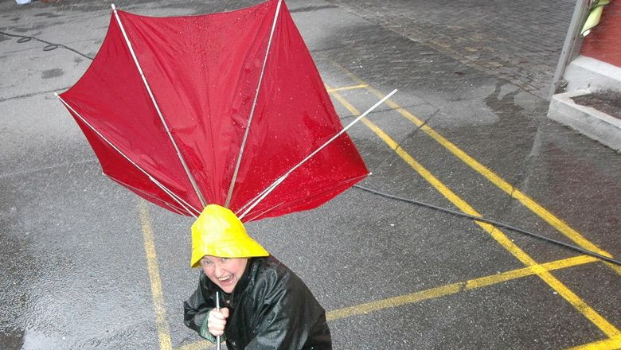

Forside
Lekeplasser i Bergen
Favoritt lekeplasser
Dra på Utveksling?
Toaletter i Bergen
☰
Kart over lekeplasser i Bergen :)
Været idag!
yr.no: Værvarsel for Bergen
Popular Posts

Nedbør-statistikk
Topp 10 fjellturer
Vikinger i Bergen
Følg @BergenBy på sosiale medier